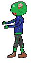
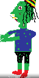
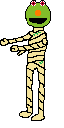
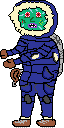
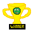
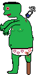
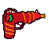
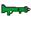
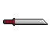

Epic Survival Guide
Welkom! Ik ga je rustig uitleggen hoe je dit spel kunt spelen.
Er is een virus uitgebroken dat mensen verandert in zombies. Dat zijn gevaarlijke wezens die je aanvallen.
Dokters hebben geprobeerd een medicijn te maken, maar dat is niet gelukt.
Eén dokter probeerde zichzelf te redden nadat hij gebeten was, maar dat ging mis.
Een andere dokter ontsnapte, maar veranderde later toch in een zombie.
Dit gebeurde in het sneeuwgebied. Ze dachten dat het virus zich daar minder zou verspreiden, maar dat was niet waar.
Jij moet nu proberen te overleven.
Er zijn drie gebieden:
- Bos
- Woestijn
- Sneeuw
Elk gebied heeft andere zombies, dus let goed op.


Zombies
In het bos kom je gewone zombies tegen. Deze zijn langzaam.
Ze lijken misschien niet gevaarlijk, maar als ze je raken verlies je leven.
Je komt ook speciale zombies tegen die sterker zijn.
In de woestijn leven Hellmo-zombies. Deze zijn sneller en gevaarlijker.

In het sneeuwgebied leven FrostBiters. Dit zijn de sterkste zombies.

Tip: blijf op afstand als je nog niet sterk genoeg bent.
Gebieden
Je begint in het bos. Dit is het makkelijkste gebied.
Soms kun je meteen doorlopen naar de woestijn, maar meestal niet.
In het bos kun je wapens en spullen vinden.
Sommige sterke wapens liggen achter prikkeldraad.
Als je daar doorheen loopt, verlies je leven.
Doe dit alleen als je genoeg hartjes hebt.
Om verder te komen moet je een trofee vinden.

Dit geldt ook voor de woestijn.
Het einde
In het sneeuwgebied kom je de zombiedokter tegen.
Dit is de dokter die eerst ontsnapte.

Hij is nu een sterke zombie en de eindbaas.
Als je hem verslaat, heb je het spel gewonnen.
Gefeliciteerd!
Wapens
Je kunt wapens vinden op de grond.
Dit zijn vaak simpele wapens.
Wil je betere wapens? Dan moet je risico nemen.
De beste wapens liggen achter prikkeldraad.
Zorg dat je genoeg leven hebt voordat je daar doorheen loopt.


Deze wapens zijn erg sterk.

Gebruik wat je hebt en speel slim.
Tips
Neem rustig de tijd om het spel te leren.
Loop niet zomaar op zombies af.
Gebruik afstand als dat kan.
Soms is wegrennen ook slim.
Zo blijf je langer leven.
Besturing
Bewegen doe je met:
W = omhoog
S = omlaag
A = links
D = rechts
Schieten doe je met K.
Wapen weggooien doe je met L.
Zit je vast? Druk op J.
Oefen dit rustig.
Succes
Je weet nu genoeg om te beginnen.
Blijf rustig en kijk goed om je heen.
Veel succes met overleven!